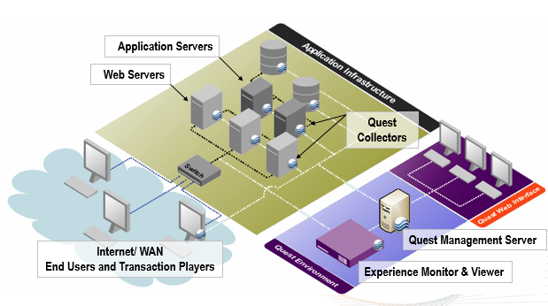
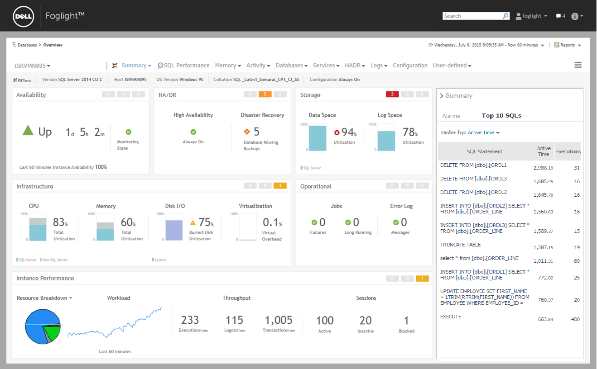
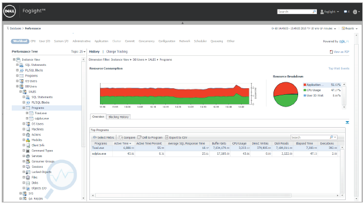
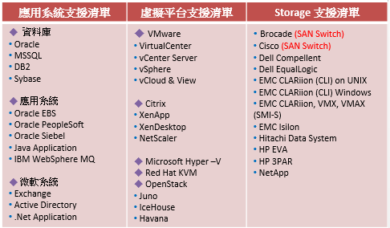
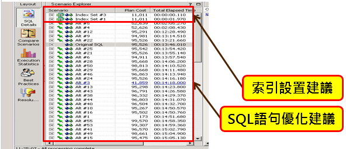
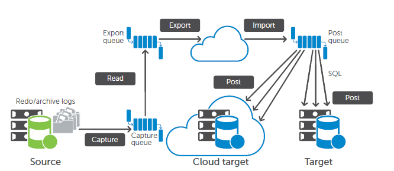
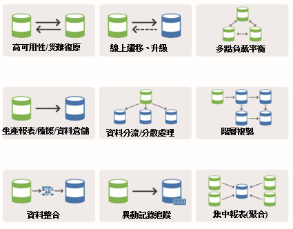

Quest
Quest是全球知名的軟體公司, 在應用軟體、資料庫與Windows架構軟體擁有許多領導業界如Toad、Shareplex、Foglight等著名產品線。 透過Quest的創新產品架構可以幫助解決阻礙客戶企業發展的複製技術與安全問題，使企業可以隨時準備就緒迎接未來的挑戰。
不同規模的公司採用Quest的解決方案也都可以減少在資訊與安全管理上的時間和資金，以便有更多的資源專注在關鍵性的投資與創新。 Quest在全球擁有超過100,000家客戶以及100多種創新領先的解決方案, 其中包括： Toad - 資料庫管理/開發人員的首選工具。 Spotlight - 卓越的資料庫監測、診斷和SQL語句追蹤解決方案。 Shareplex - 優質的的資料庫複製和近乎即時的資料整合解決方案。 Foglight - 最佳的資訊系統效能監測解決方案，可使虛擬環境、應用程序、資料庫的效能與可用度最大化，同時簡化管理。 Space Manager with LiveReorg - 協助管理人員更簡易的進行Oracle 資料庫空間管理與優化工具。帶給企業全方位的管理、安全、監控與資料複製方案。
資料是所有企業的重要命脈，也是企業成功的最大關鍵。近年來大數據、行動化的應用使資料爆炸的時代提早來臨。台灣企業面對這樣的巨量資料挑戰，必須在資料管理、分析與監控上下足功夫，然而這樣的需求卻是一件必須具備不少門檻的浩大工程，不論在技術上或者成本上都需要一定程度的投入，也因此往往成為企業對於這些資料的相關管理分析應用望之卻步的原因之一。Quest便是一系列專門替不同資料(庫)打造的軟體，分別提供簡單易懂的管理、分析、監控與即時同步Solutions，相信可以成為您企業資料的最佳助手，下列將就Quest系列不同的產品進行相關介紹：
低成本高效能的資料庫管理工具 – Foglight
無論是實體環境或虛擬化環境，資料庫的運行狀況對於確保業務持續性都至關重要。為了保持卓越的資料庫性能，資料庫管理員(DBA)需要全天候資料收集和自動化警報功能。遺憾的是，這些功能通常需要投入大量額外開銷。
借助Foglight 無論在何時、何地以何種方式發生性能問題，資料庫管理員都可以快速輕鬆地檢測、診斷和解決這些問題並生成報告。
應用系統與資訊服務的完整平台
Foglight軟體可以定位為各種資訊整合提供的平台，當中提供了不同角色的資訊整合，層面包含Service level, End User, Application效能,資料庫以及Infrastructure的管理。
於Foglight當中會針對不同的層級提供包含監控資訊服務效能、告警、管理儀錶板(Dashboards)、監控規則及安全性管理機制 與 SQL 語法診斷等功能。
 圖1 Foglight 監控資料架構資料庫管理的聰明選擇
Foglight在資料庫的管理上可以替DBA節省許多時間成本，並且提升實質提供資料庫的效能使用。
Foglight會從兩種層面進行資料庫的監控，包含(1) Workload Analysis, 針對資料庫進行量測並分析相關使用者連接到資料庫的SQL 語法效能表現 – 直接實現資料庫服務的服務水平管理。(2)Resource Monitoring, 用來確保相關Database component 是在被規範的使用資源下正常使用，如果超過規定範圍便可以警告DBA 介入管理。
基於這樣的機制，Foglight可提供系統可用細監控了解資料庫是否運作正常資源監控以了解資料庫忙碌程度與時間花費所在、Workload 監控來解析資料庫附載壓力大小與正常與否、資料庫歷史行為與異動的作業追蹤、最後可以統整相關聯服務運行並進行服務狀態監控。
  圖2 Foglight 監控資料庫操作介面Foglight更具備可以進行更改跟蹤和多維資料深入分析的功能， 使DBA可以比以往更快地調查和解決性能問題。
支援最多跨平台/資料庫的唯一管理
Foglight軟體可以以單一console同時管理企業內各種不同系統的OS或者資料庫與相關架構等，透過簡單統一的同型化介面，將管理監控作業變成最簡單的工作。
 圖3 Foglight 跨平台支援清單資料庫優化專家 – Toad(for Oarcle)
Toad for Oracle是一套可以節省時間並降低風 險的工具，為IDC評定的領先資料庫開發和優化軟體。藉由Toad可以加快應用程式作業，並增進團隊協作且不折不扣地提高系 統性能。
Toad for Oracle提供的solution可以用來構建高品質、無錯誤的應用程式，從而在生產環境中執行和擴展，以及自動執行任務和流程。這有助於DBA最大限度地降低資料庫更改產生的風險，同時保持卓越的品質和高級別的工作效率。
不同版本提供Oracle最適合用途
Toad提供不同種的管理工具，可以讓企業選擇最適合的來搭配，讓Oracle資料庫發揮到最大的效能，這當中包含下列幾種。
Toad for Oracle Base Edition
提供用於構建和維護資料庫程式（包括PL/SQL和SQL腳本） 的多種功能。它包含支援PL/SQL和SQL*Plus 腳本的強大集成式調教套件。並具備Toad Data Modeler，可簡化跨多個資料庫平臺的資料建模和設計，無需額外付費。
Toad for Oracle Professional Edition
除包含Base Edition的所有功能外， 還包含代碼分析功能，該功能可自動執行代碼品質審查，以確保代碼的客觀性和一致性。通過應用經驗豐富的專家提出的內建規則，您可以輕鬆獲得虛擬資料庫專家的説明，將他們的建議應用到代碼中。還可調整這些規則，以適應公司的實際需求。資料生成功能則可用多行真實資料填充表格，以進行功能性測試。
Toad for Oracle Xpert Edition
除提供Professional Edition中的所有功能外，還包含集成的SQL和PL/SQL性能調整功能。可以通過兩種方式實現性能調整：(1)借助Toad編輯器的自動優化SQL功能執行快速簡單的單語句優化，或者(2)單獨通過SQL Optimizer for Oracle來實現。
SQL Optimizer可自動驗證SQL和PL/SQL，確保實現最佳性能。該工具還可掃描SQL和PL/SQL 代碼，發現潛在的性能問題；如果存在性能更好的SQL替代方案，則會生成替換代碼，以便即時實施到代碼庫中。借助SQL Optimizer，Toad for Oracle Xpert Edition還可以根據持續的資料庫SQL執行工作負載生成索引選項。它在測試環境中執行索引影響分析，以確定這 些更改的總體性能影響。Xpert Edition 中的代碼分析功能支援動態代碼違規通知功能，同時會掃描代碼以確定SQL調整候選項。
 圖4 SQL Optimizer提供語句優化建議此外，Toad for Oracle還提供 Development Suite 以及 DBA Suite 分別針對不同的使用者角色設計，特別強化與開發者或者資料庫管理者相關的功能。
Toad for Oracle可以說是目前市場上最專業且精準的Oracle資料庫輔助工具，幫助您不折不扣 地提高靈活性並縮短 開發週期。
高速資料庫複製專家 - Shareplex
SharePlex為資料庫複製的 “ 絕佳替代方案”，可以確保高可用性和業 務連續性。能夠在不影響OLTP系統性能和可用性的情況下即時複製生產資料。對於資料複製的可能衝突性與完整性有完善的比對機制與工具，為市場上最具競爭力的資料複製產品。
原廠等級數據複製技術
Shareplex的資料複製技術與原廠技術幾乎相同，但是卻在TCO上大幅優於原廠產品。資料數據複製的過程中，Shareplex會透過source端的redo log進行資料最即時的擷取並且以內建的Capture/Read/Export/Import等步驟將資料丟到Target端，藉此完成資料同步複製的目的。
 圖5 Shareplex資料複製流程資料複製的整合性功能
資料庫複製
可以為內網、公網和雲 平臺的active-passive and active-active Oracle 10g、11g和12c資料庫配置提供高 可用性。
近乎即時的資料集成
通過從Oracle擷取的更改資料，在Oracle、SQL Server、 EDB Postgres Advanced Server和多種類 型的JMS以及SQL和XML檔中啟用本地 資料交付功能，從而進行遷移。
簡單省時
可快速輕鬆地完成安裝過程，讓您可以在15分鐘內使用所需的一切內容進行資料複製，而且無需安裝任何加 載項或管理包。
資料準確性和完整性
確保目標實例可准確表示來源資料庫。提供對等監控和衝突檢測與解決功能（預先定義和用戶定義）。使用比較和修復功能顯示來源和目標之間的差異，以實現快速、零停機時間的增量解決功能。
提高性能
將進程密集型報告分載到主生產資料庫伺服器以外的伺服器。此外， 它還可複製大量更改資料，而不會令網路 活動激增。
Oracle到Oracle遷移故障恢復
如果遷移後的系統出現故障，可以快速恢復到原始系統但不丟失資料。
支持Oracle標準版和企業版
支持包含不同的源作業系統和目標作業系統、數 據庫版本（包括10g至12c）、群集環境以 及ASM、RAC和Exadata® X2、X3、X4和X5的混合環境。
最多元的使用方式
shareplex提供了一個可以讓企業系統擴充與優化的機會，透過一對多或對多一甚至是雙向互相傳遞資料的方式，Shareplex可以幫企業系統架構起很有效率與組合的架構，這包含如災難高可用(Disaster Recovery)、即時report伺服器使用(report server)、多點負載平衡(load balance)、資料庫遷移與升級(Database Migration and Upgrade)等。Shareplex都可以充分扮演起串聯角色，讓企業系統更具擴充性、靈活性與使用彈性。
 圖6 Shareplex資料複製同步架構CP值最高的市場同級產品
Shareplex為市場上做資料同步最具CP值產品，綜合效能與內建工具都是企業最佳選擇。此外除了授權式購買，Shareplex還可以針對專案提供租賃型的產品，讓企業在使用資料複製工具上有更多的選擇。